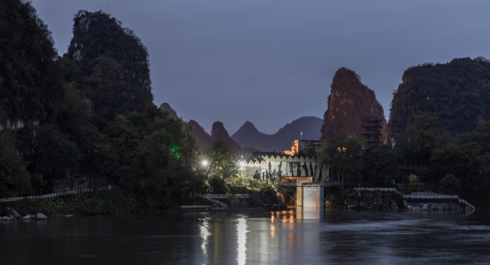

桂林，简称“桂”，广西壮族自治区
辖地级市、Ⅱ型大城市、省域副中心城市，是世界著名风景游览城
市、万年智慧圣地、全国重要高新技术产业基地，中国老工业基地，
是国务院批复确定的中国对外开放国际旅游城市、全国旅游创新
发展先行区和国际旅游综合交通枢纽，截至2019年，全市下辖6区10
县、代管1个县级市、总面积2.78万平方千米，建成区面积162平方千米。
根据第七次人口普查数据，截至2020年11月1日零时，桂林市常
住人口为493.11万人。桂林地处中国华南，湘桂走廊南端，是中
央军委桂林联勤保障中心驻地、国家可持续发展议程创新示范区、
中国旅游业态风向标，联合国世界旅游组织/亚太旅游协会旅游趋
势与展望国际论坛永久举办地，是泛珠江三角洲经济区与东盟自由
贸易区战略交汇的重要节点城市，国家卫生城市，全国文明城市，
第二批海绵城市建设示范城市，是以新型工业为主的国际旅游胜地。
桂林是首批国家历史文化名城，秦始皇统一岭南后属桂林郡。
1201年，著名诗人王正功赋诗“桂林山水甲天下”。甑皮岩文化是
史前中国多元一体进程的文化源流之一，甑皮岩发现的陶雏器填补世
界陶器起源空白，是中国制陶技术重要的起源地之一。桂林是广西重
要高校集聚区，拥有广西师范大学、桂林电子科技大学、桂林理工大
学、桂林医学院、陆军特种作战学院等16所高校。
考诸典籍，“桂林”之名最早见
于战国时期的《山海经》，其《海内南经》有“桂林八树，
在番隅东”的记载。“桂林”之名，始于秦代，桂林郡因当
地盛产玉桂而成名。桂林是具有万年历史的人类智慧圣地，
甑皮岩文化是史前中国多元一体进程的文化源流之一，代表
了距今12000—7000年间古人类在亚热带和热带地区的一种最
佳适应方式，承载了中国与东南亚地区史前文化交流发展的重
要历史信息。广西自古属于中国汉地十八省之一，桂林是原广
西省省会，自广西建省800年以来为广西政治、文化、经济、军
事中心，桂林在民国新桂系统治时期是全国模范省的省会，抗
战时期作为我国抗战文化中心，被誉为文化城。
桂林市位于南岭山系西南部，地处湘
桂走廊南端，广西壮族自治区东北部，地处东经109°36＇50″—
111°29＇30″，北纬24°15＇23″—26°23＇30″，境域南北长2
36千米、东西宽189千米。北部及东北部与湖南省交界，东南部与
广西壮族自治区贺州市接壤，南部与广西壮族自治区梧州市及来宾
市毗邻，西部及西南部与广西壮族自治区柳州市相接，总面积2.78
万平方千米，占广西壮族自治区总面积的11.74%。桂林市位于南岭
山系西南部、桂林—阳朔岩溶盆地北端中部，处在“湘桂夹道”中。
地形为西部、北部及东南部高，中部较低。以中山或低中山地形为
主，山峰海拔多在1000米，越城岭主峰猫儿山海拔2141.5米，称华
南第一峰。平乐县海拔低至97米。山峰与盆地间的相对高差为600～
1600米，坡度20°～45°。市区东西两侧为低山丘陵地形，海拔标高
300～600米，相对高差200～300米；南北两端为低缓的丘陵。岗垄丘
地形，海拔标高160～200米，相对高差10～20米，中部为典型的岩溶
地貌，峰奇水美，呈现为岩溶峰林及地势开阔平坦的孤峰平原和河谷
阶地，地面海拔标高150～160米，峰顶标高200～300米。
桂林市境内野生动物繁多，陆栖脊椎野
生动物约545种，其中两栖类36种，爬行类58种，鸟类375种，兽类
76种。属国家重点保护的珍稀濒危动物69种，包括黄腹角雉、白颈
长尾雉、金雕、蟒蛇、豹、云豹、林麝7种国家一级重点保护动物。
桂林市森林资源丰富，森林覆盖率70.91%。各县森林覆盖率达55.3%
～78.8%，龙胜县是广西第一个绿化达标县。全市建有森林旅游景区
50多个，主要分布在龙胜、资源两县和花坪、猫儿山、千家洞、海
洋山自然保护区和10多个国有林场中。桂林市有高等植物1000多种，
包括银杉、银杏等名贵树种；自然植被以马尾松为主，市区以桂花
树为主，桂花是桂林市的市花。林业主产杉木和毛竹，桂林市森林
面积121.56万公顷，森林储蓄量3774.42万立方米，每年可提供木材
40余万立方米、毛竹1600多万根。
桂林是一个多民族聚集地区，汉、壮、
苗、瑶、侗、回、京、彝、水、满等多个民族和谐相处，多民族融
合的地域民族文化构成了桂林城市文化一个重要特征。淳朴的民风、
独特的地域文化，诸如农耕、游牧、节庆、服饰、饮食起居、婚丧、
建筑、语言文字、宗教信仰等。桂林是具有万年历史的人类智慧圣地，
是世界上具有三处万年古陶遗址（甑皮岩、大岩、庙岩）的城市，也
是中国发现洞穴遗址最丰富、最集中的城市之一，甑皮岩发现的“陶
雏器”填补世界陶器起源空白点。中国社会科学院考古研究所、广西
文物保护与考古研究所等考古学术机构誉桂林为“万年智慧圣地”。